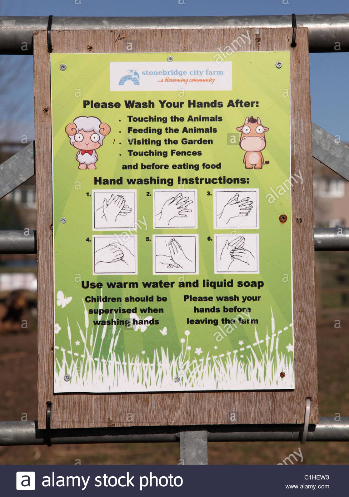

Third
Home
Meet the Animals
Rides and Attractions
Opening Hours
How to Find Us
Cafe and Gift Shop
Safety and Hygeine
Contact Us

HYGEINE
Visiting a farm is a very enjoyable experience for both children and adults alike but it’s important to remember that contact with farm animals
carries a risk of infection because of the microorganisms - or germs - they naturally carry.